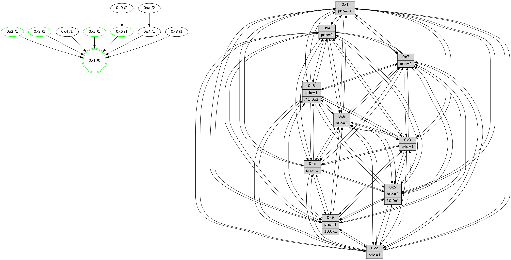

>> << IDX [start] -100 -25 -5 +0 +5 +25 +100 [1550.00131202]
 Previous packets
----------------------------------------------------------------------
1545.165305 beacon01(faad) #0 coord=01,02,03,04,05,06,07,0a,09,08 cycle=688.0ms assoc
-- color-indic=1 64 c3 10
1545.175287 beacon02(faad) #0 coord=01,02,03,04,05,06,07,0a,09,08 cycle=688.0ms assoc 64 50 21
1545.185289 beacon03(faad) #0 coord=01,02,03,04,05,06,07,0a,09,08 cycle=688.0ms assoc 64 2a 6c
1545.195290 beacon04(faad) #0 coord=01,02,03,04,05,06,07,0a,09,08 cycle=688.0ms assoc 64 5d 86
1545.205288 beacon05(faad) #0 coord=01,02,03,04,05,06,07,0a,09,08 cycle=688.0ms assoc 64 27 cb
1545.215287 beacon06(faad) #0 coord=01,02,03,04,05,06,07,0a,09,08 cycle=688.0ms assoc 64 a9 1c
1545.225288 beacon07(faad) #0 coord=01,02,03,04,05,06,07,0a,09,08 cycle=688.0ms assoc 64 d3 51
1545.235294 beacon0a(faad) #0 coord=01,02,03,04,05,06,07,0a,09,08 cycle=688.0ms assoc 64 a2 5a
1545.245294 beacon09(faad) #0 coord=01,02,03,04,05,06,07,0a,09,08 cycle=688.0ms assoc 64 2c 8d
1545.255292 beacon08(faad) #0 coord=01,02,03,04,05,06,07,0a,09,08 cycle=688.0ms assoc 64 56 c0
1545.267178 [Hello(1): seq=894 sym=4,2,9,5,10,3,8,6,7 sysInfo=coloring-mode-on,ColoringModeRequestCalled stat=4:11,2,11,4/2:15,12,3,7/9:3,6,3,3/5:9,4,11,11/10:15,11,13,8/3:9,12,11,13/8:6,0,4,7/6:2,6,7,4/7:13,3,13,3]
1545.270853 [Color(9) seq=528 @0:0 prio=1 >10.@1,1.@2,1.@3,1.@4]
1545.272494 [Color(10) seq=574 @0:0 prio=1]
1545.275469 [Hello(5): seq=985 sym=7,6,4,2,1,9,8,10,3 sysInfo=hasWarning stat=7:13,6,0,1/6:1,2,1,1/4:8,13,5,0/2:0,1,0,0/1:4,6,7,0/9:3,6,10,12/8:1,5,6,8/10:11,0,14,9/3:0,1,0,0]
1545.279247 [Color(5) seq=521 @0:0 prio=1 >10.@1,1.@2,1.@3,1.@4]
1545.282353 [Hello(6): seq=985 sym=3,2,5,4,7,9,8,10,1 sysInfo=hasWarning stat=3:12,4,10,0/2:15,10,4,1/5:4,12,0,6/4:1,14,9,9/7:15,7,8,1/9:3,14,11,12/8:3,12,3,10/10:7,11,4,13/1:8,6,14,1]
1545.285794 [Color(6) seq=617 @0:0 prio=1 >>1.@2,1.@3,1.@4]
1545.293741 [Hello(3): seq=985 sym=1,7,6,2,4,8,9,10,5 sysInfo=hasWarning stat=1:5,3,0,0/7:3,3,15,0/6:3,12,3,1/2:1,5,1,0/4:5,6,1,14/8:9,3,8,9/9:13,7,7,2/10:15,10,13,5/5:0,14,8,3]
1545.297222 [Color(3) seq=614 @0:0 prio=1]
1545.300201 [Hello(2): seq=981 sym=4,5,7,6,9,8,10,1 asym=3 sysInfo=hasWarning stat=4:2,3,9,14/5:14,15,12,4/7:3,6,14,3/6:4,13,2,1/9:13,14,3,11/8:13,2,7,0/10:13,12,3,11/1:15,4,8,0/3:3,2,0,0]
1545.303113 [Color(2) seq=561 @0:0 prio=1]
----------------------------------------------------------------------
1545.953437 beacon01(faad) #0 coord=01,02,03,04,05,06,07,0a,09,08 cycle=688.0ms assoc
-- color-indic=1 64 7f 15
1545.963419 beacon02(faad) #0 coord=01,02,03,04,05,06,07,0a,09,08 cycle=688.0ms assoc 64 ec 24
1545.973419 beacon03(faad) #0 coord=01,02,03,04,05,06,07,0a,09,08 cycle=688.0ms assoc 64 96 69
1545.983420 beacon04(faad) #0 coord=01,02,03,04,05,06,07,0a,09,08 cycle=688.0ms assoc 64 e1 83
1545.993421 beacon05(faad) #0 coord=01,02,03,04,05,06,07,0a,09,08 cycle=688.0ms assoc 64 9b ce
1546.003420 beacon06(faad) #0 coord=01,02,03,04,05,06,07,0a,09,08 cycle=688.0ms assoc 64 15 19
1546.013420 beacon07(faad) #0 coord=01,02,03,04,05,06,07,0a,09,08 cycle=688.0ms assoc 64 6f 54
1546.023424 beacon0a(faad) #0 coord=01,02,03,04,05,06,07,0a,09,08 cycle=688.0ms assoc 64 1e 5f
1546.043424 beacon08(faad) #0 coord=01,02,03,04,05,06,07,0a,09,08 cycle=688.0ms assoc 64 ea c5
1546.054903 [Hello(7): seq=985 sym=2,3,5,6,8,4,9,10,1 sysInfo=hasWarning stat=2:13,0,9,6/3:0,6,13,6/5:1,9,11,5/6:7,6,10,14/8:13,2,2,1/4:4,7,2,0/9:7,8,4,3/10:4,5,1,7/1:14,10,9,0]
1546.057333 [Hello(9): seq=929 sym=2,5,3,4,7,6,8,10,1 sysInfo=hasWarning stat=2:9,0,14,13/5:13,6,6,0/3:8,5,10,7/4:7,8,7,3/7:3,1,7,5/6:9,1,12,2/8:8,1,5,9/10:6,10,7,0/1:7,11,13,1]
1546.060444 [Hello(4): seq=985 sym=5,8,6,2,3,9,7,10,1 sysInfo=hasWarning stat=5:15,9,9,4/8:5,3,0,0/6:5,4,5,3/2:8,5,12,3/3:0,11,3,1/9:11,7,12,3/7:6,1,1,0/10:12,13,4,14/1:15,5,14,1]
1546.065068 [Color(1) seq=665 @0:0 prio=10]
1546.067022 [Hello(10): seq=918 sym=6,2,3,8,7,5,9,4,1 sysInfo=hasWarning stat=6:14,15,11,6/2:9,6,13,2/3:14,10,3,15/8:1,12,0,6/7:12,5,14,10/5:15,9,5,3/9:5,5,0,0/4:12,8,10,3/1:8,2,13,1]
1546.072740 [Hello(8): seq=929 sym=5,2,3,7,9,6,4,10,1 sym= sysInfo=hasWarning stat=]
----------------------------------------------------------------------
1546.741567 beacon01(faad) #0 coord=01,02,03,04,05,06,07,0a,09,08 cycle=688.0ms assoc
-- color-indic=1 64 4b 0d
1546.751550 beacon02(faad) #0 coord=01,02,03,04,05,06,07,0a,09,08 cycle=688.0ms assoc 64 d8 3c
1546.761550 beacon03(faad) #0 coord=01,02,03,04,05,06,07,0a,09,08 cycle=688.0ms assoc 64 a2 71
1546.771550 beacon04(faad) #0 coord=01,02,03,04,05,06,07,0a,09,08 cycle=688.0ms assoc 64 d5 9b
1546.781550 beacon05(faad) #0 coord=01,02,03,04,05,06,07,0a,09,08 cycle=688.0ms assoc 64 af d6
1546.791549 beacon06(faad) #0 coord=01,02,03,04,05,06,07,0a,09,08 cycle=688.0ms assoc 64 21 01
1546.801551 beacon07(faad) #0 coord=01,02,03,04,05,06,07,0a,09,08 cycle=688.0ms assoc 64 5b 4c
1546.811555 beacon0a(faad) #0 coord=01,02,03,04,05,06,07,0a,09,08 cycle=688.0ms assoc 64 2a 47
1546.831555 beacon08(faad) #0 coord=01,02,03,04,05,06,07,0a,09,08 cycle=688.0ms assoc 64 de dd
1546.843131 [Hello(1): seq=895 sym=4,2,9,5,10,3,8,6,7 sysInfo=coloring-mode-on,ColoringModeRequestCalled stat=4:11,2,11,4/2:0,13,3,7/9:3,7,3,3/5:10,5,11,11/10:0,12,13,8/3:10,13,11,13/8:7,0,4,7/6:3,7,7,4/7:14,3,13,3]
1546.846153 [Hello(5): seq=986 sym=7,6,4,2,1,9,8,10,3 sysInfo=hasWarning stat=7:14,6,0,1/6:2,3,1,1/4:9,13,5,0/2:1,2,0,0/1:5,7,7,0/9:3,6,10,12/8:2,5,6,8/10:12,0,14,9/3:1,2,0,0]
1546.848976 [Color(5) seq=522 @0:0 prio=1 >10.@1,1.@2,1.@3,1.@4]
1546.850929 [Hello(6): seq=986 sym=3,2,5,4,7,9,8,10,1 sysInfo=hasWarning stat=3:13,5,10,0/2:0,11,4,1/5:4,12,0,6/4:1,14,9,9/7:0,7,8,1/9:3,14,11,12/8:4,12,3,10/10:8,11,4,13/1:9,7,15,1]
1546.853482 [Color(9) seq=529 @0:0 prio=1 >10.@1,1.@2,1.@3,1.@4]
1546.855538 [Hello(2): seq=982 sym=4,5,7,6,9,8,10,1 asym=3 sysInfo=hasWarning stat=4:3,3,9,14/5:14,15,12,4/7:4,6,14,3/6:4,13,2,1/9:13,14,3,11/8:14,2,7,0/10:14,12,3,11/1:0,5,8,0/3:3,2,0,0]
1546.858429 [Color(2) seq=562 @0:0 prio=1]
1546.860621 [STC(6)->1 #0.277 tree-change,inconsistent-stability,stable,to-color d=1]
1546.862262 [Color(10) seq=575 @0:0 prio=1]
1546.864515 [Color(6) seq=618 @0:0 prio=1 >>1.@2,1.@3,1.@4]
1546.866233 [Hello(3): seq=986 sym=1,7,6,2,4,8,9,10,5 sysInfo=hasWarning stat=1:6,4,1,0/7:4,3,15,0/6:3,12,3,1/2:2,6,1,0/4:5,6,1,14/8:10,3,8,9/9:13,7,7,2/10:0,10,13,5/5:0,14,8,3]
1546.868926 [STC(7)->1 #0.277 tree-change,inconsistent-stability,to-color d=1]
1546.870980 [STC(3)->1 #0.277 tree-change,inconsistent-stability,stable,to-color d=1]
1546.873263 [Color(3) seq=615 @0:0 prio=1]
----------------------------------------------------------------------
1547.529700 beacon01(faad) #0 coord=01,02,03,04,05,06,07,0a,09,08 cycle=688.0ms assoc
-- color-indic=1 64 f7 08
1547.539681 beacon02(faad) #0 coord=01,02,03,04,05,06,07,0a,09,08 cycle=688.0ms assoc 64 64 39
1547.549683 beacon03(faad) #0 coord=01,02,03,04,05,06,07,0a,09,08 cycle=688.0ms assoc 64 1e 74
1547.559683 beacon04(faad) #0 coord=01,02,03,04,05,06,07,0a,09,08 cycle=688.0ms assoc 64 69 9e
1547.569684 beacon05(faad) #0 coord=01,02,03,04,05,06,07,0a,09,08 cycle=688.0ms assoc 64 13 d3
1547.579682 beacon06(faad) #0 coord=01,02,03,04,05,06,07,0a,09,08 cycle=688.0ms assoc 64 9d 04
1547.589684 beacon07(faad) #0 coord=01,02,03,04,05,06,07,0a,09,08 cycle=688.0ms assoc 64 e7 49
1547.599687 beacon0a(faad) #0 coord=01,02,03,04,05,06,07,0a,09,08 cycle=688.0ms assoc 64 96 42
1547.619688 beacon08(faad) #0 coord=01,02,03,04,05,06,07,0a,09,08 cycle=688.0ms assoc 64 62 d8
1547.631179 [Hello(8): seq=930 sym=5,2,3,7,9,6,4,10,1 sysInfo=hasWarning stat=5:2,13,7,3/2:10,13,2,14/3:0,12,8,6/7:5,3,2,0/9:3,0,7,6/6:10,14,5,2/4:1,7,13,2/10:13,13,13,5/1:7,11,14,0]
1547.634089 [Hello(9): seq=930 sym=2,5,3,4,7,6,8,10,1 sysInfo=hasWarning stat=2:10,1,14,13/5:13,6,6,0/3:9,6,11,7/4:8,8,7,3/7:3,1,8,5/6:9,2,13,2/8:9,1,5,9/10:7,11,7,0/1:8,12,13,1]
1547.636742 [Color(1) seq=666 @0:0 prio=10]
1547.638974 [STC(9)->6-.->1 #0.277 to-color d=2]
1547.640711 [Hello(7): seq=986 sym=2,3,5,6,8,4,9,10,1 sysInfo=hasWarning stat=2:13,0,9,6/3:0,7,14,6/5:1,9,11,5/6:7,6,10,14/8:14,2,2,1/4:4,7,2,0/9:8,8,4,3/10:5,5,1,7/1:14,11,10,0]
1547.646518 [Hello(10): seq=919 sym=6,2,3,8,7,5,9,4,1 sysInfo=hasWarning stat=6:14,0,11,6/2:9,6,13,2/3:15,11,4,15/8:2,12,0,6/7:12,5,15,10/5:15,9,5,3/9:5,5,0,0/4:12,8,10,3/1:9,2,13,1]
1547.650617 [STC(10)->7-.->1 #0.277 to-color d=2]
----------------------------------------------------------------------
1548.317833 beacon01(faad) #0 coord=01,02,03,04,05,06,07,0a,09,08 cycle=688.0ms assoc
-- color-indic=1 64 33 06
1548.327815 beacon02(faad) #0 coord=01,02,03,04,05,06,07,0a,09,08 cycle=688.0ms assoc 64 a0 37
1548.337816 beacon03(faad) #0 coord=01,02,03,04,05,06,07,0a,09,08 cycle=688.0ms assoc 64 da 7a
1548.347815 beacon04(faad) #0 coord=01,02,03,04,05,06,07,0a,09,08 cycle=688.0ms assoc 64 ad 90
1548.357818 beacon05(faad) #0 coord=01,02,03,04,05,06,07,0a,09,08 cycle=688.0ms assoc 64 d7 dd
1548.367817 beacon06(faad) #0 coord=01,02,03,04,05,06,07,0a,09,08 cycle=688.0ms assoc 64 59 0a
1548.377817 beacon07(faad) #0 coord=01,02,03,04,05,06,07,0a,09,08 cycle=688.0ms assoc 64 23 47
1548.387821 beacon0a(faad) #0 coord=01,02,03,04,05,06,07,0a,09,08 cycle=688.0ms assoc 64 52 4c
1548.407822 beacon08(faad) #0 coord=01,02,03,04,05,06,07,0a,09,08 cycle=688.0ms assoc 64 a6 d6
1548.419732 [Hello(1): seq=896 sym=4,2,9,5,10,3,8,6,7 sysInfo=coloring-mode-on,ColoringModeRequestCalled stat=4:11,2,11,4/2:1,14,3,7/9:3,8,4,3/5:11,6,11,11/10:1,13,14,8/3:11,14,12,13/8:8,0,4,7/6:4,8,8,4/7:15,3,14,3]
1548.423732 [Hello(5): seq=987 sym=7,6,4,2,1,9,8,10,3 sysInfo=hasWarning stat=7:15,6,1,1/6:3,4,2,1/4:9,13,5,0/2:2,3,0,0/1:6,8,7,0/9:4,7,11,12/8:3,5,6,8/10:13,1,15,9/3:2,3,1,0]
1548.427190 [Color(5) seq=523 @0:0 prio=1 >10.@1,1.@2,1.@3,1.@4]
1548.432083 [Hello(3): seq=987 sym=1,7,6,2,4,8,9,10,5 sysInfo=hasWarning stat=1:7,5,1,0/7:5,3,15,0/6:3,12,3,1/2:2,6,1,0/4:5,6,1,14/8:11,3,8,9/9:14,7,8,2/10:1,10,14,5/5:1,14,8,3]
1548.435535 [Color(3) seq=616 @0:0 prio=1]
1548.439704 [TreeStatus(6)-.->1 #0.277 tree-change,inconsistent-stability,stable child=1]
----------------------------------------------------------------------
1549.105963 beacon01(faad) #0 coord=01,02,03,04,05,06,07,0a,09,08 cycle=688.0ms assoc
-- color-indic=1 64 8f 03
1549.115946 beacon02(faad) #0 coord=01,02,03,04,05,06,07,0a,09,08 cycle=688.0ms assoc 64 1c 32
1549.125945 beacon03(faad) #0 coord=01,02,03,04,05,06,07,0a,09,08 cycle=688.0ms assoc 64 66 7f
1549.135945 beacon04(faad) #0 coord=01,02,03,04,05,06,07,0a,09,08 cycle=688.0ms assoc 64 11 95
1549.145944 beacon05(faad) #0 coord=01,02,03,04,05,06,07,0a,09,08 cycle=688.0ms assoc 64 6b d8
1549.155945 beacon06(faad) #0 coord=01,02,03,04,05,06,07,0a,09,08 cycle=688.0ms assoc 64 e5 0f
1549.165947 beacon07(faad) #0 coord=01,02,03,04,05,06,07,0a,09,08 cycle=688.0ms assoc 64 9f 42
1549.175950 beacon0a(faad) #0 coord=01,02,03,04,05,06,07,0a,09,08 cycle=688.0ms assoc 64 ee 49
1549.195950 beacon08(faad) #0 coord=01,02,03,04,05,06,07,0a,09,08 cycle=688.0ms assoc 64 1a d3
1549.207367 [Hello(10): seq=920 sym=6,2,3,8,7,5,9,4,1 sysInfo=hasWarning stat=6:15,1,11,7/2:9,6,13,2/3:0,12,4,15/8:2,12,0,6/7:12,5,15,10/5:0,10,5,3/9:5,5,0,0/4:12,8,10,3/1:10,2,13,1]
1549.210643 [Color(1) seq=667 @0:0 prio=10]
1549.212682 [Hello(7): seq=987 sym=2,3,5,6,8,4,9,10,1 sysInfo=hasWarning stat=2:13,0,9,6/3:1,8,14,6/5:2,10,11,5/6:8,7,10,15/8:14,2,2,1/4:4,7,2,0/9:8,8,4,3/10:6,5,2,7/1:15,11,10,0]
1549.216556 [TreeStatus(10)-.->1 #0.277 tree-change,inconsistent-stability child=1]
1549.217762 [Hello(8): seq=931 sym=5,2,3,7,9,6,4,10,1 sysInfo=hasWarning stat=5:3,14,7,3/2:10,13,2,14/3:1,13,8,6/7:6,3,2,0/9:4,0,8,6/6:11,14,5,3/4:1,7,13,2/10:14,13,14,5/1:8,12,14,0]
1549.220504 [Hello(9): seq=931 sym=2,5,3,4,7,6,8,10,1 sysInfo=hasWarning stat=2:11,2,14,13/5:14,7,6,0/3:10,7,11,7/4:9,8,7,3/7:3,1,8,5/6:9,2,13,3/8:9,1,5,9/10:8,11,8,0/1:9,12,13,1]
1549.227184 [Hello(4): seq=987 sym=5,8,6,2,3,9,7,10,1 sysInfo=hasWarning stat=5:1,11,9,4/8:6,3,0,0/6:6,5,6,4/2:10,7,12,3/3:2,13,4,1/9:11,8,12,3/7:6,1,2,0/10:14,14,5,14/1:1,6,14,1]
----------------------------------------------------------------------
1549.894094 beacon01(faad) #0 coord=01,02,03,04,05,06,07,0a,09,08 cycle=688.0ms assoc
-- color-indic=1 64 1b da
1549.904076 beacon02(faad) #0 coord=01,02,03,04,05,06,07,0a,09,08 cycle=688.0ms assoc 64 88 eb
1549.914077 beacon03(faad) #0 coord=01,02,03,04,05,06,07,0a,09,08 cycle=688.0ms assoc 64 f2 a6
1549.924077 beacon04(faad) #0 coord=01,02,03,04,05,06,07,0a,09,08 cycle=688.0ms assoc 64 85 4c
1549.934078 beacon05(faad) #0 coord=01,02,03,04,05,06,07,0a,09,08 cycle=688.0ms assoc 64 ff 01
1549.944078 beacon06(faad) #0 coord=01,02,03,04,05,06,07,0a,09,08 cycle=688.0ms assoc 64 71 d6
1549.954078 beacon07(faad) #0 coord=01,02,03,04,05,06,07,0a,09,08 cycle=688.0ms assoc 64 0b 9b
1549.964081 beacon0a(faad) #0 coord=01,02,03,04,05,06,07,0a,09,08 cycle=688.0ms assoc 64 7a 90
1549.984082 beacon08(faad) #0 coord=01,02,03,04,05,06,07,0a,09,08 cycle=688.0ms assoc 64 8e 0a
1549.997206 [Hello(1): seq=897 sym=4,2,9,5,10,3,8,6,7 sysInfo=coloring-mode-on,ColoringModeRequestCalled stat=4:12,2,11,4/2:1,15,3,7/9:4,8,4,3/5:12,7,11,11/10:2,13,14,9/3:12,15,12,13/8:9,0,4,7/6:5,8,8,5/7:0,3,14,3]